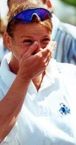

Kőbán Rita |
|||||||||
|---|---|---|---|---|---|---|---|---|---|
|
1977 óta sportol, előbb az FTC, majd a Csepel SC, 1996 óta pedig az UTE színeiben. Kilencszeres világbajnok, 30 magyar bajnoki címe van. 1992-ben a barcelonai olimpián a kajak négyessel aranyérmet szerzett. Egyesben a második helyen végzett, párosban pedig harmadik lett. Az 1996-os atlantai olimpián 500 méteren egyéni aranyérmet szerzett. A Magyar Testnevelési Egyetemen sportmenedzseri szakán szerzett diplomát. Gyakran vezet műsort a különböző rádiókban és televíziós műsorokban. Kedvenc időtöltése a motorozás a lovaglás, a kertészkedés, az olvasás és a zenehallgatás. |
 | ||||||||